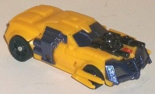
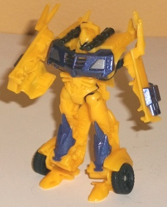
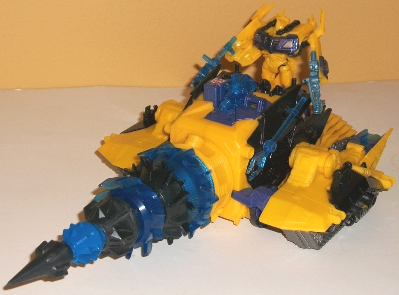
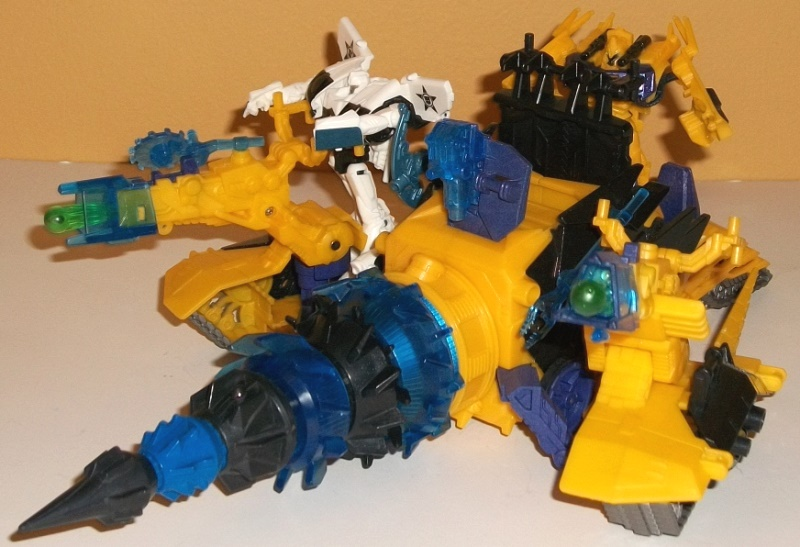

Allegiance
: Autobot
Size
: Cyberverse Vehicle Set
Difficulty of Transformation to Robot
:
Very Easy
Difficulty of Transformation of Vehicle
:
Very Easy
Color Scheme
: "Cheese" orangish
yellow, and some black, dark metallic silvery blue, silver, and light sky
blue
Figure Rating
: 7.8
Vehicle-Base Rating
: 7.0
(NOTE: Because this set is composed of repaints, this is not a full-blown review. This mainly covers any changes made to the set and the color scheme, and merely compares it to the original versions of these molds. For a review on the original Prime legion Bumblebee toy, go here . For a review on the Energon Driller-- what was used as the base mold for the Autobot Driller-- go here .)


Like the Bumblebee "redeco"
that came with the
Bumblebee Battle Suit
set, the Bumblebee that comes with the Autobot driller isn't much different
from the
original version
of Beast Hunters
legion Bumblebee. He has the same basic Bumblebee black-and-yellow color
scheme-- the most obvious difference on this version is that the front
grill, side windows & armor, and front windshield are of a rather dark
metallic silvery blue, compared to the black of those parts on the original.
The shade of the color itself is quite nice, and gives off quite the "shiny
armor" vibe because how metallic it all looks, even if the blue doesn't
contrast quite as well with the yellow as the black on the original version
of this mold did. There is still some black, though-- the dual-barreled
gun on the hood is now black compared to the silver on the original, and
the wheels and a few minor parts visible in robot mode are also black.
In fact, the black that is present is a bit more "pure" than the black
on the original release of this mold, which ups the contrast and is a slight
positive change, in my opinion. Of one final note is that this Bumblebee's
yellow is of a slightly lighter, more orangey shade than the more straightforward,
duller yellow on the original. I don't really have a preference either
way with this color change, as it's so slight. This shade of yellow makes
him look a bit more "movie-ish" in terms of his overall coloration.
This version of Bumblebee
has the same alterations made to the mold as the original legion Beast
Hunters version; no mold changes have been made specifically for this version.


The Autobot Driller
that comes with Bumblebee follows his same general color scheme-- which
seems to be a requirement of all Bumblebee accessories, at this point.
Just like 'Bee, it's primarily the same color of orangish yellow, with
a fair amount of black on the sides of the main body and side sections,
as well as on parts of the drill. The "new addition" color-wise here is
a larger amount of blue-- particularly a rather dark shade of translucent
blue that forms parts of the drill, the front of the side missile launchers,
and the hacksaw and claw-prod accessories (yes, this driller does come
with the same extra Cyberverse-scale weapons that the original version
of this mold had-- needless to say, they worked better with Knock Out).
There's also a bit of the same dark metallic blue used on 'Bee himself,
used on the driller for the transformation slider on the back end, some
minor connector parts, and part of the main body. There's also just a touch
of translucent lime green on the spring-loaded projectiles, which goes
REALLY well with the translucent blue-- I wish it had been used a bit more.
As far as paint apps, they're fairly minimal, which is a bit of a shame--
there's too many large unbroken areas of yellow that really could've used
some more paint. However, the treads are painted a nice silver shade, and
the second-to-front piece of the drill is painted a blue that fits in with
the dark transparent blue strikingly well without actuallly being transparent
because of safety regulations.
The Autobot Driller
does have a few mold alterations, but unfortunately all the changes involve
the removal of the electronics in the toy. The wire connecting the translucent
blue gun to the electronics pack is gone-- it's just a non-firing gun accessory
now-- and no lights come on in the toy when you press down on the Autobot-symbol
button (which has been remolded to remove the molded-in Decepticon faction
symbol on it-- the Autobot symbol on this button is merely painted on),
though the drill still spins quite nicely. This also means that there's
a few holes in the toy that now serve no function-- otherwise, no mold
changes have been made to the driller.
If one of the Cyberverse
vehicle sets had to be rare, I'm glad it was this one-- it's definitely
the weakest out of all of them in terms of fitting the character it comes
with. At least the
Apex Armor
had a TON
of remolding done, whereas for Bumblebee's driller, only things have been
REMOVED, and in general the yellow/blue/black color scheme doesn't fit
mining equipment remotely as well as the darker scheme on the original
release of the driller toy (and doesn't look as good this time around even
ignoring that fact-- there's just too much yellow here, though the dark
metallic blue is a pretty nice shade). Plus, Bumblebee already has a Cyberverse
set! Just a general waste of a Cyberverse vehicle set "slot"; it should
have had more substantial remolding and/or been for someone besides Bumblebee
for me to recommend it to anyone who isn't a Bumblebee completist.
Review by Beastbot